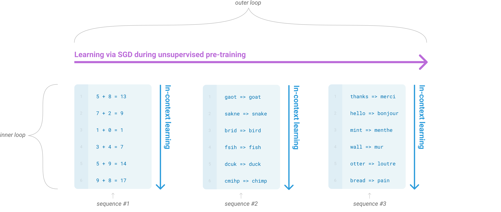

GPT，GPT-2，GPT-3¶
📄 涉及论文链接： - GPT-1: Improving Language Understanding by Generative Pre-Training - GPT-2: Language Models are Unsupervised Multitask Learners - GPT-3: Language Models are Few-Shot Learners
目录¶
核心要点¶
- GPT 系列的技术路线：坚持使用 Transformer 解码器（decoder-only）做自回归语言模型预训练，与 BERT 的编码器（encoder + MLM）路线形成鲜明对比。GPT 选择了一条更难的路线——预测未来（next token prediction）而非完形填空（masked language model），但天花板也更高。
- 从微调到上下文学习的范式演进：GPT-1 提出"预训练 + 微调"范式；GPT-2 探索 Zero-Shot（不做任何微调）；GPT-3 通过 175B 参数实现 In-Context Learning（Few-Shot 但不更新权重），开辟了大模型新范式。
- 暴力出奇迹：GPT-1（117M）→ GPT-2（1.5B）→ GPT-3（175B），数据和模型规模各增长约 100 倍，性能持续突破。GPT-3 的炸裂效果证明了 scale 的力量。
- GPT vs BERT 的设计哲学差异：GPT 用解码器做自回归语言模型（预测下一个词），BERT 用编码器做掩码语言模型（完形填空）。前者更难训练但泛化天花板更高，后者在同规模下精度更好但受限于双向注意力的任务适配性。
各代核心创新点¶
GPT-1：提出"预训练 + 微调"范式，借鉴 CV 领域思路，先在无标注文本上训练自回归语言模型再微调；通过构造任务相关的输入序列（用 <s>、</s>、<delim> 三个特殊标记），使同一个 Transformer 模型无需改变架构即可适配分类、蕴含、相似度、多选题四类任务。
GPT-2：在被 BERT 打败后坚持解码器路线，提出 Zero-Shot 评估范式——不在下游任务上做任何微调，直接用预训练模型预测；同时提出 Prompt 思想（如 translate English to French:），让输入形式与预训练时的文本分布一致，为后续 In-Context Learning 埋下种子。
GPT-3：开辟 In-Context Learning 范式——给少量示例作为 prompt，不做任何梯度更新，模型仅通过前向推理时的注意力机制从上下文示例中提取信息；将数据和模型规模各放大约 100 倍（117M → 1.5B → 175B），证明了 Scale 的力量——Few-Shot GPT-3 175B 的平均精度比 Zero-Shot GPT-2 1.5B 翻倍，大量任务接近甚至超过微调 SOTA；同时提出大规模数据清洗方法论（用 GPT-2 的 WebText 训练分类器过滤 Common Crawl + LSH 去重）。
贯穿三代：始终坚持 Transformer 解码器 + 自回归语言模型（预测下一个词）这条更难但天花板更高的路线，而非 BERT 的编码器 + 掩码语言模型（完形填空）。GPT-3 的炸裂效果最终证明了这条路线的正确性，直接催生了 GPT-4、ChatGPT 等大模型应用。
1. GPT-1：使用生成式预训练提升语言理解¶
1.1 背景与动机¶
在 GPT-1 之前，NLP 领域面临两大困难：
- 标注数据稀缺：虽然有大量无标注文本，但标注好的数据很少，使得监督学习训练出的模型泛化能力有限。NLP 不像计算机视觉有 ImageNet 那样大规模的标注数据集。
- 迁移学习困难：NLP 子任务差异极大（分类、蕴含、相似度、问答、生成等），没有统一的模型架构能适配所有任务。之前的词嵌入（如 Word2Vec）只在词级别学习表示，下游任务仍需各自设计模型。
GPT-1 的核心思路是借鉴计算机视觉中成熟的"预训练 + 微调"范式：先在大量无标注文本上训练一个语言模型（预训练），再在各子任务上微调。关键创新在于——通过构造任务相关的输入序列，使得同一个 Transformer 模型无需改变架构就能适配各种不同的 NLP 任务。
1.2 方法¶
1.2.1 预训练：自回归语言模型¶
GPT 使用标准的因果语言模型（Causal Language Model）目标函数，给定前 \(k\) 个词预测下一个词，最大化似然：
其中 \(\mathcal{U} = \{u_1, \ldots, u_n\}\) 是无标注文本序列，\(k\) 是上下文窗口大小，\(\Theta\) 是模型参数。
与 BERT 的 Masked Language Model（MLM，完形填空）对比： - GPT：只看前面的词预测下一个词（单向/自回归），使用 Transformer 解码器（带因果掩码） - BERT：同时看前后文预测被遮蔽的词（双向），使用 Transformer 编码器
预测未来远比完形填空更难——好比给你到今天为止的股票信息预测明天的价格，远比告诉你前后信息推测中间缺失值要难。这也是 GPT 在同规模下效果不如 BERT 的原因之一，但如果模型足够强大，预测未来的能力意味着更强的泛化性。
1.2.2 模型架构¶
GPT 使用 Transformer 解码器，具体配置： - 12 层 Transformer 块 - 每层隐藏维度 \(d_{model} = 768\) - 12 个注意力头 - 可学习参数约 1.17 亿（117M） - 上下文窗口大小 \(k = 512\) - 使用 Byte-Pair Encoding（BPE）词元化，词汇表约 40,000
1.2.3 微调：任务相关的输入构造¶
GPT 的核心创新之一是通过构造不同的输入序列格式来适配不同的 NLP 任务，而无需改变模型架构。引入三种特殊标记：<s>（起始符）、</s>（结束符）、<delim>（分隔符）。

Figure 1: GPT-1 将四类 NLP 任务统一表示为序列输入。(a) 文本分类：单个文本加首尾标记；(b) 文本蕴含：前提和假设用分隔符连接；(c) 文本相似度：两段文本交换顺序分别输入再合并；(d) 多选题：问题和每个选项分别组合。
四类任务的输入构造：
| 任务类型 | 输入构造 | 输出 |
|---|---|---|
| 分类（如情感分析） | <s> text </s> |
取最后一个 token 的特征，经线性层分类 |
| 蕴含（如 NLI） | <s> premise <delim> hypothesis </s> |
同上，三分类 |
| 相似度 | 正反两个序列：<s> t1 <delim> t2 </s> 和 <s> t2 <delim> t1 </s> |
两个输出相加后经线性层，二分类 |
| 多选题 | \(n\) 个序列：<s> question <delim> answer_i </s> |
每个选项的置信度，取 argmax |
微调时使用双目标函数：语言模型损失 + 分类损失，通过超参数 \(\lambda\) 加权：
1.3 数据集与训练¶
- 预训练数据：BooksCorpus——包含约 7,000 本未出版的书，约 8 亿词
- 训练方式：标准自回归语言模型训练
1.4 GPT-1 vs BERT 对比¶
| GPT-1 | BERT-Base | BERT-Large | |
|---|---|---|---|
| 架构 | Transformer 解码器 | Transformer 编码器 | Transformer 编码器 |
| 层数 | 12 | 12 | 24 |
| 隐藏维度 | 768 | 768 | 1024 |
| 参数量 | ~117M | ~110M | ~340M |
| 预训练目标 | 自回归 LM（预测下一个词） | MLM（掩码语言模型）+ NSP | 同左 |
| 预训练数据 | BooksCorpus（8亿词） | BooksCorpus + Wikipedia（~30亿词） | 同左 |
| 下游适配 | 构造输入 + 微调 | 微调 | 微调 |
BERT-Base 故意使用与 GPT 相同的层数和维度，就是为了做公平对比。结果上 BERT-Base 优于 GPT，BERT-Large 又大幅优于 BERT-Base——更大的模型 + 更大的数据 = 更好的效果。
2. GPT-2：语言模型是无监督的多任务学习器¶
2.1 背景与动机¶
GPT-1 被 BERT 以更大数据和更大模型打败后，OpenAI 团队面临选择：是换回编码器路线，还是坚持解码器？
作者选择了坚持解码器路线，但做了两个关键改变：
- 更大的数据和模型：构建新数据集 WebText，训练更大的模型
- 新的评估范式——Zero-Shot：不在下游任务上做任何微调或参数更新，直接用预训练模型做预测
一篇论文的价值 ≈ 新意度 × 有效性 × 问题大小。如果仅在同等条件下做工程优化（更大模型更好效果），新意度不足。GPT-2 通过转向 Zero-Shot 设定，在新意度上拉开了差距——虽然有效性（精度）暂时不如微调方法，但提出了一个全新的问题角度。
2.2 核心方法：Zero-Shot 与 Prompt¶
2.2.1 Zero-Shot 的挑战¶
GPT-1 在微调时引入了 <s>、</s>、<delim> 等特殊标记，模型通过微调学会理解它们。但在 Zero-Shot 设定下，模型不做任何更新，如果输入包含模型未见过的特殊标记，模型会困惑。
解决方案：使用自然语言作为 prompt（提示），让输入形式与预训练时看到的文本尽量一致。
例如：
- 机器翻译：translate English to French: [英文文本] =>，模型接着生成法语
- 阅读理解：answer the question: [文本] Q: [问题] A:，模型接着生成答案
2.2.2 In-Context 的思想来源¶
作者讨论了为什么 prompt 可能有效：如果语言模型足够强大，它能理解 prompt 中的任务描述；而且训练数据中本身就包含很多类似"问-答"、"英文-法文对照"的文本模式。
2.3 数据集：WebText¶
- 来源：从 Reddit 上收集用户提交且 karma ≥ 3 的链接（至少 3 个赞），过滤掉低质量网页
- 规模：约 800 万个文档，40GB 文本
- 优势：Reddit 社区已帮忙做了质量筛选，信噪比远高于 Common Crawl
2.4 模型架构¶
GPT-2 沿用 Transformer 解码器，但做了以下改进： - Pre-Norm：将 Layer Normalization 移到每个子层之前（而非之后），受 Sparse Transformer 启发 - 可学习的词元反转（reversible tokens） - 设计了 4 个不同规模的模型：
| 模型名 | 层数 | 隐藏维度 (\(d_{model}\)) | 参数量 |
|---|---|---|---|
| Small | 12 | 768 | 117M |
| Medium | 24 | 1024 | 345M |
| Large | 36 | 1280 | 762M |
| XL | 48 | 1600 | 1.5B |
2.5 实验结果¶
GPT-2 在多个任务上的 Zero-Shot 表现：
- 阅读理解：与当时 Zero-Shot SOTA 相当或更好
- 文本摘要：略逊于有监督的 Seq2Seq+Attention 模型
- 问答：与微调模型差距较大
- 关键发现：随着模型规模增大，性能持续上升，暗示更大的模型还有更大潜力
GPT-2 的效果"差一点意思"，但方向是对的。它为 GPT-3 铺平了道路——只需要把数据和模型再放大 100 倍。
3. GPT-3：语言模型是少样本学习器¶
3.1 背景与动机¶
GPT-2 在新意度上拉得很高（Zero-Shot），但有效性（精度）不足。GPT-3 的目标是同时拥有高新意度和高有效性：
- 回到 Few-Shot 设定（给少量示例，但不做梯度更新）
- 将数据和模型规模各放大约 100 倍
GPT-3 不做任何梯度更新/微调来处理下游任务——因为 175B 参数的模型计算梯度极其昂贵。这也是为什么它被称为 In-Context Learning：模型的学习仅发生在前向推理时的上下文中，通过注意力机制从 prompt 里的示例提取信息。
3.2 三种评估模式¶

Figure 2.1: GPT-3 的三种使用模式对比。右：Fine-tuning（传统微调，需要梯度更新）；中：Few-Shot（给 K 个示例作为上下文，不更新权重）；左：One-Shot / Zero-Shot（给 1 个或 0 个示例）。GPT-3 主要使用中间的 In-Context Learning 模式。| 模式 | 定义 | 是否更新权重 |
|---|---|---|
| Fine-tuning | 在下游任务训练集上做梯度更新 | ✅ |
| Few-Shot | 给 10-100 个示例作为 prompt，不更新权重 | ❌ |
| One-Shot | 只给 1 个示例 | ❌ |
| Zero-Shot | 只给任务描述（如 translate English to French:） |
❌ |
3.3 模型架构¶
GPT-3 的模型架构与 GPT-2 基本相同（Pre-Norm Transformer 解码器），但规模大增。设计了 8 个不同规模的模型：
| 模型名 | 参数量 | 层数 | \(d_{model}\) | 头数 | \(d_{head}\) | Batch Size | 学习率 |
|---|---|---|---|---|---|---|---|
| GPT-3 Small | 125M | 12 | 768 | 12 | 64 | 0.5M | \(6.0 \times 10^{-4}\) |
| GPT-3 Medium | 350M | 24 | 1024 | 16 | 64 | 0.5M | \(3.0 \times 10^{-4}\) |
| GPT-3 Large | 760M | 24 | 1536 | 16 | 96 | 1M | \(2.5 \times 10^{-4}\) |
| GPT-3 XL | 1.3B | 24 | 2048 | 32 | 64 | 1M | \(2.0 \times 10^{-4}\) |
| GPT-3 2.7B | 2.7B | 32 | 2560 | 32 | 80 | 2M | \(1.6 \times 10^{-4}\) |
| GPT-3 6.7B | 6.7B | 32 | 4096 | 32 | 128 | 2M | \(1.2 \times 10^{-4}\) |
| GPT-3 13B | 13B | 40 | 5140 | 40 | 128 | 2M | \(1.0 \times 10^{-4}\) |
| GPT-3 175B | 175B | 96 | 12288 | 96 | 128 | 3.2M | \(0.6 \times 10^{-4}\) |
关键观察： - GPT-3 175B 是 GPT-2 XL（1.5B）的 100 倍以上 - 模型设计偏扁宽（层数 96 但宽度 12288），因为计算复杂度与宽度平方成正比、与层数线性成正比 - 最大模型的 batch size 高达 320 万，使用微软的 DGX-1 集群（高带宽 V100）分布式训练 - 学习率随模型增大而递减（与 Facebook 的线性缩放规则相反）
3.4 训练数据¶
GPT-3 的训练数据规模比 GPT-2 大约 100 倍：
| 数据源 | 词数 | 采样权重 |
|---|---|---|
| Common Crawl（过滤版） | ~4 万亿 | 60% |
| WebText2（GPT-2 数据集升级版） | ~190 亿 | 22% |
| Books1 | ~120 亿 | 8% |
| Books2 | ~120 亿 | 8% |
| Wikipedia | ~30 亿 | 3% |
Common Crawl 的清洗（GPT-2 曾因其质量差而放弃，GPT-3 不得不使用）： 1. 质量过滤：用 GPT-2 的 WebText 作为正例、Common Crawl 作为负例，训练 Logistic Regression 分类器，保留被判定为高质量的文档 2. 去重：使用 LSH（Locality-Sensitive Hashing）算法快速检测和去除重复文档 3. 混合高质量数据：加入 Books 和 Wikipedia 等已知高质量数据源
虽然 Common Crawl 数据量占绝对多数（~80%），但采样时仅以 60% 的概率采样，而 Wikipedia 等小数据源被过采样，保证训练质量。
3.5 Scaling Laws¶
 Figure 3.1: 不同规模模型的训练曲线。x 轴为累计计算量（FLOPs），y 轴为验证损失。每条线代表一个模型规模。关键发现：最优模型的性能与计算量遵循 Power Law 分布——计算量指数增长时，损失线性下降。
Figure 3.1: 不同规模模型的训练曲线。x 轴为累计计算量（FLOPs），y 轴为验证损失。每条线代表一个模型规模。关键发现：最优模型的性能与计算量遵循 Power Law 分布——计算量指数增长时，损失线性下降。
关键发现： - 每个模型规模都有一个"甜蜜点"——训练到某个程度后损失不再下降，继续训练浪费算力 - 将所有模型的最优点连成一条线，呈 Power Law 关系：要线性降低损失，需要指数增加计算量 - 这与人类学习形成鲜明对比：人脑仅消耗约 60 瓦能量，学会阅读只需几本书，而 GPT-3 需要整个互联网的数据和数百台机器训练多日
3.6 实验结果¶
GPT-3 在大量 NLP 任务上测试了 Zero-Shot、One-Shot、Few-Shot 三种模式：
- 综合性能：Few-Shot GPT-3 175B 的平均精度接近 60%，相比 GPT-2 1.5B Zero-Shot 的 ~30% 翻倍
- 阅读理解（如 NaturalQuestions、TriviaQA）：接近甚至超过微调的 SOTA 模型（如 T5）
- 机器翻译：低资源语言翻译表现出色，翻译到英语优于翻译到其他语言
- 文本生成：生成的新闻文章人类难以区分是机器还是人类写的
- 算术推理：在加减乘除等基础数学运算上表现出一定能力
3.7 局限性¶
GPT-3 论文花了大量篇幅讨论局限性：
- 长文本生成弱：生成较长文本时容易重复前面的内容，难以推进情节
- 单向注意力限制：只能看前面的词（解码器的因果掩码），不像 BERT 能看双向
- 均匀预测的浪费：语言模型对每个词（包括虚词）投入同等的计算，不像人类学习能区分重点和非重点
- 纯文本模态：没见过视频、物理交互等多模态信息
- 样本有效性低：需要整个互联网的数据才能学到人类几本书就能掌握的知识
- In-Context Learning 的本质存疑：Few-Shot 时模型是真的"从头学习"，还是只是从训练记忆中"检索"相关内容？如果是后者，泛化到全新任务的能力有限
- 训练成本极高：数百台机器训练多日，能耗巨大
- 不可解释性：175B 参数的模型无法解释其决策过程
4. 总结与对比¶
4.1 GPT 1→2→3 版本演进¶
| GPT-1 | GPT-2 | GPT-3 | |
|---|---|---|---|
| 发布时间 | 2018.06 | 2019.02 | 2020.05 |
| 最大参数量 | 117M | 1.5B | 175B |
| 数据规模 | BooksCorpus（8亿词） | WebText（40GB） | Common Crawl+（~5万亿词） |
| 下游适配方式 | 微调（Fine-tuning） | Zero-Shot（Prompt） | In-Context Learning（Few-Shot/One-Shot/Zero-Shot，不更新权重） |
| 核心卖点 | 预训练+微调范式 | 无需微调的 Zero-Shot | 暴力出奇迹 + Few-Shot 炸裂效果 |
| 论文性质 | 正式论文 | 技术报告 | 技术报告（63页） |
| 核心创新 | 统一输入格式适配多任务 | Prompt 思想的提出 | Scale 的力量 + In-Context Learning 范式 |
4.2 GPT vs BERT 设计哲学对比¶
| 维度 | GPT 系列 | BERT 系列 |
|---|---|---|
| 架构 | Transformer 解码器（Decoder-only） | Transformer 编码器（Encoder-only） |
| 注意力 | 因果注意力（只看前面） | 双向注意力（看全部） |
| 预训练目标 | 自回归语言模型（预测下一个词） | 掩码语言模型（完形填空）+ NSP |
| 难度 | 更难（预测未来） | 较易（完形填空） |
| 同规模效果 | 稍差 | 更好 |
| 泛化天花板 | 更高（预测未来→通用能力） | 受限（完形填空→特定任务） |
| 下游适配 | 构造输入/Prompt | 微调 |
| 团队 | OpenAI | |
| 引用量 | ~11,000（三篇合计） | ~27,000 |
GPT 系列引用量低于 BERT 并非因为创新度或效果不如 BERT，而是因为 GPT 选择了更难的技术路线——要做到炸裂效果需要做到 GPT-3 的规模，几乎没有其他团队能复现。而 BERT 的门槛更低，大家咬咬牙就能跑起来。
4.3 GPT 系列的启示¶
- 技术路线的选择：GPT 选择了解码器 + 自回归语言模型这条更难的路线，虽然初期效果不如 BERT，但坚持做下去后天花板更高，最终引领了大语言模型的潮流。
- Scale 的重要性：GPT-2 效果平平，但把数据和模型各放大 100 倍后 GPT-3 效果炸裂。这证明了在某些方向上，暴力确实能出奇迹。
- 范式转移：GPT-3 开辟了 In-Context Learning 的新范式——不需要微调就能适配各种任务，这直接催生了后来的 GPT-4、ChatGPT 等大模型应用。
- 研究策略：GPT-2 在效果不佳时通过转换视角（从微调到 Zero-Shot）保持了论文的新意度，这是做研究的一个重要策略——不要在一条路上走到黑，尝试从新角度审视问题。